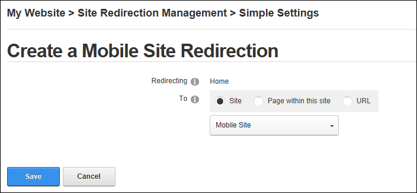
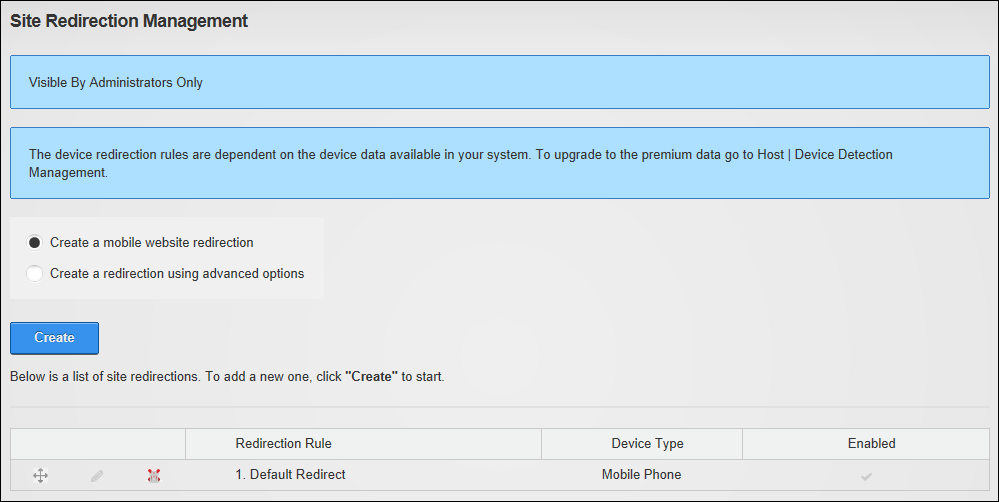

Adding a Mobile Site Redirection
How to create a redirection path for your mobile site.
- Navigate to Admin > Advanced Settings > Site Redirection Management.
- Select the Create a mobile website redirection option.
- Click the Create button.
- At Redirecting, the name of the page currently set as the Home page is displayed.
- At To, select the location you want to redirect users to from these options:
- Site: Select to redirect users to another site within this installation.
- Select the site name from the drop down list. As shown in the below image.
- Page within this site: Select to redirect users to a particular page within the current site.
- Select the page name from the drop down list.
- URL: Select to redirect users to an external URL.
- In the URL text box, enter the redirection URL.

- Click the Save button. The newly created redirection is now listed.
